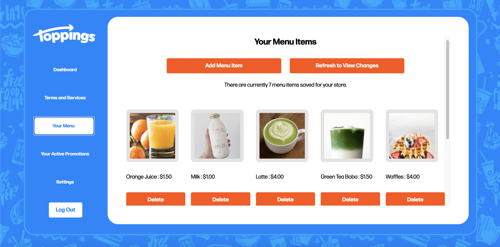

Link to Github Repo / Google Firebase, Javascript, jQuery, CSS Flexbox and Grid, HTML
Above is a screenshot of the vendor portal I implemented this summer. Vendors can log on through the Toppings website to add images, labels, and pricings for menu items they'd like to promote through the Toppings app. They can freely delete entries they want to remove. Vendors can also add/remote active promotions through the portal and change their display name and preferred contact information under settings. All parts of vendor portal and the landing page were implemented with a Firebase backend and a custom-made Javascript/jQuery/HTML/CSS frontend.
Toppings was accepted to Fall 2020's Harvard i-Lab Ventures cohort.